Простая работа с MQTT в openHAB 2.x
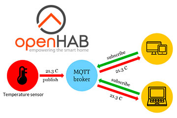
Здесь вы найдёте перевод статьи "MQTT Arrives in the Modern openHAB 2.x Architecture" с дополнительными пояснениями и примерами.
С выходом openHAB 2.4 обновился один из самых важных модулей для создания собственного умного дома - MQTT Binding, который отвечает за способность openHAB общаться с MQTT серверам. Модуль был поностью переписан под версию 2.x и дополнен большим количеством новых функций.
Согласно Википедии, MQTT протокол - это упрощённый сетевой протокол, работающий поверх TCP/IP, используемый для обмена сообщениями между устройствами по принципу издатель-подписчик. Он был разработан специально для общения умных устройств между собой.
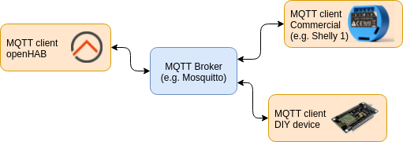
Принцип работы протокола похож на YouTube: датчики создают каналы на MQTT сервере и постоянно отправляют туда данные. Openhab может подключиться к MQTT серверу, подписаться на эти каналы и получать данные с датчиков. Для исполнительных устройств, например, Wi-Fi розеток, система работает наоборот. OpenHAB создает канал на MQTT сервере и отправляет туда команды типа ON/OFF, розетка подключается к серверу, подписывается на этот канал и слушает его. Когда в канал приходит новая команда - розетка выполняет её (включает или выключает реле).
Установка и настройка сервера
Для работы по протоколу MQTT вам необходим как минимум один сервер и клиенты (умные устройства, которые будут общаться между собой). MQTT сервер называется Broker. Удобвство в том, что брокеров может быть несколько, каждый может отвечать за определенную подсистему, а openHAB может всех их объединить в один большой умный дом.
Создание собственного брокера заключается в том, что вам необходимо установить софт для работы брокера на предполагаемый сервер. Это может быть как реальный удаленный сервер, так и обычный ноутбук, миникомпьютер или даже wi-fi роутер. Главное, чтобы у этого сервера был IP адрес, к которому может подключится клиент.
После установки и быстрой настройки вы должны получить: IP адрес и порт для подключения. По-умолчанию большинство брокеров работает через порт 1883 и поддерживает анонимное подключение клиентов. В этом случае для подключения вам даже не нужны будут логин и пароль. Позже вы можете настроить безопасное соединение и добавить подключение по логину и паролю.
Одним из самых популярных MQTT брокером является Mosquitto. В следующей статье вы можете найти подробную инструкцию как его поставить и настроить Инструкция по установке и настройке на Raspberry Pi и Oragne Pi.
Также начиная с версии 2.4 в openHAB есть свой собственный MQTT брокер. Его можно найти в PaperUI в дополнениях по названию Embedded MQTT broker.
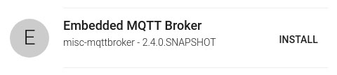
Устанавливаете его и брокер сразу готов к работе. Вы можете зайти в его настройки в PaperUI и выбрать дополнительные опции, например, защищённое соединение или подключение по логину и паролю. Но для первых шагов работы с MQTT хватит стандартных настроек.
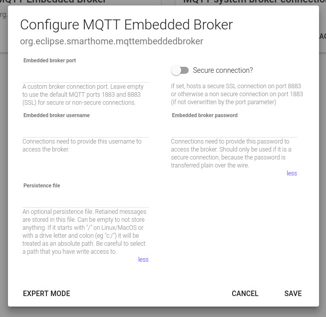
В результате настройки на том же ip адресе что и ваш openHAB будет доступен еще и MQTT брокер, к которому можно подключиться без пароля.
Предположим, что вам удалось настроить MQTT брокер одим из способов, которые описаны выше. В результате у вас есть сервер с ip адресом, например, 192.168.1.60, который разрешает подключения без пароля. Теперь попробуем разобраться как клиенты могут с ним работать.
Работа с MQTT в openHAB 1.x
В openHAB версии 1.x работа с MQTT происходила следующим образом: сначала ставился MQTT Binding, потом в текстовом файле добавлялись данные для подключения к брокеру (ip адрес, порт, логин, пароль). После этого в файле с элементами системы (*.items) мы прописывали какое устройство соответсвует какому каналу на MQTT брокере.
Например, для того, чтобы получить данные с датчика температуры мы могли добавить элемент:
Number Out_temp "Температура на улице [%.1f °C]" {mqtt="<[mainbroker:/easywolf1/dallas1/temperature:state:default]"}
Out_temp - системное название элемента, mqtt - работает через байндинг для MQTT протокола, mainbroker - подключаемся к брокеру с название mainbroker, подписываемся на канал /easywolf1/dallas1/temperature и смотрим какие данные на него приходят. Датчик делает новый замер, передает данные в канал /easywolf1/dallas1/temperature, openHAB сразу получает эти данные и отображает в системе.
Для добавления wi-fi розетки можно было использовать следующий код элемента:
Switch SONOFF5 "Wi-Fi розетка" { mqtt=">[mainbroker:sonoffnode5/gpio/12:command:ON:1],>[mainbroker:sonoffnode5/gpio/12:command:OFF:0]" }
В этом коде openhab подключается к брокеру mainbroker и в канал sonoffnode5/gpio/12 отправляет команды 1 или 0, которые соответствуют включению и выключению.
Проблема первой версии MQTT байндинга была в том, что всю настройку работы с MQTT приходилось выполнять в текстовых файлах.
Работа с MQTT в openHAB 2.4
В openHAB 2.4 впервые появился новый MQTT Binding, который позволяет делать все настройки MQTT через графический интерфейс Paper UI. Для начала установите MQTT Binding, для этого зайдите в Add-ons, перейдите во вкладку Binding и найдите там "MQTT Binding". Нажмите кнопку INSTALL.
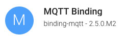
Новый модуль может параллельно работать со старым "openHAB 1.x binding", но разработчики не рекомендуют пользоваться одновременно сразу несколькими модулями.
Добавляем MQTT брокер
Обратите внимание на то, что для работы с MQTT протоколом вам необходимо сначала настроить MQTT сервер, который обычно не входит в MQTT binding (мы описали процесс установки выше). Настройка MQTT байндинга - это только настройка подключения openHAB к уже существующему MQTT серверу.
Первое, что вам необходимо сделать для работы с MQTT брокером, это настроить подключение опенхаба к нему. Для этого необходимо перейти в раздел Configuration -> Things и добавить новое устройство иконкой "+". В списке возможных устройств вы выбираете MQTT Binding. Скорее всего никакие устройства не найдутся, поэтому нажимаете "ADD MANUALLY". В появившемся списке выбираете "MQTT Broker". В форме вводите название брокера, Thing ID и IP адрес сервера MQTT. Дальше с этим брокером мы будем работать по Thing ID.
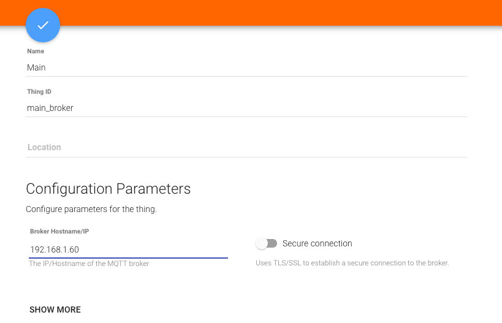
В зависимости от конфигураций на вашем MQTT сервере при подключении может использоваться много разных параметров. Например, кроме IP адреса вам может понадобиться логин и пароль. Переключатель "Secure connection" выбирает по какому порту вы подключаетесь к брокеру. Все эти параметры можно посмотреть нажав "SHOW MORE". В нашем примере мы использовали подключение без пароля, поэтому ничего дополнительно указывать не надо.
Если подключение прошло успешно, то в списке ваших устройств Configuration -> Things появится подключение к MQTT брокеру со статусом "ONLINE".
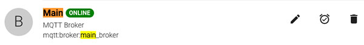
Теперь когда ваш openHAB может подключиться к MQTT серверу пора добавить новые элементы в систему.
Добавление MQTT Generic Things
После того как вы добавили MQTT брокер вы можете работать с каналами, которые у него есть. Многие разработчики используют свои обозначения для названий каналов и команд, например, для включения устройств может быть ON, 1 или true, поэтому достаточно трудно сделать автоматическое распознавание каналов и вам необходимо будет добавлять их вручную.
Если в первой версии модуля сразу происходила привязка определенного канала к элементу системы item, то в новой версии мы создаем устройство (Thing), которое может содержать в себе несколько каналов. И уже эти каналы привязываются к элементами системы (items). Расскажем об этом подробнее.
Предположим, у вас в комнате есть датчик температуры, который отправляет данные в канал /easywolf1/dallas1/temperature каждую минуту, а также есть wi-fi розетка Sonoff, которая ждет команды на канале sonoffnode5/gpio/12. Вы можете объединить их в одно устройство под название "Кабинет". Для этого переходите в Configuration -> Things, добавляете новое устройство через MQTT Binding, но в списке выбираете не Broker, а Generic MQTT Thing. Вписываете название в поле "Name" и в поле "Bridge Selection" выбираете брокер, который вы добавили в предыдущем шаге:
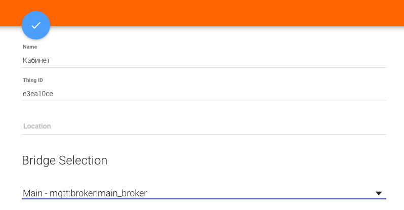
Новое MQTT устройство появится в списке устройств в Configuration -> Things. Нажмите на него и откроется окно добавления каналов.
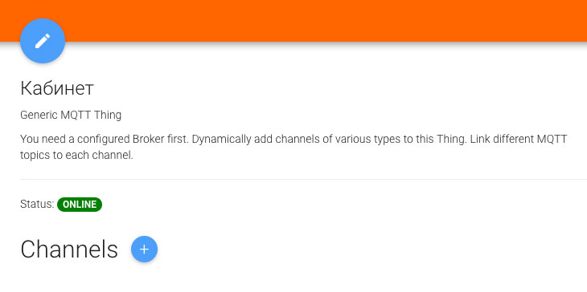
Нажмите на иконку "+" рядом с заголовком "Channels". Для датчика температуры добавляете канал типа "Number value" с "/easywolf1/dallas1/temperature" в "MQTT state topic".
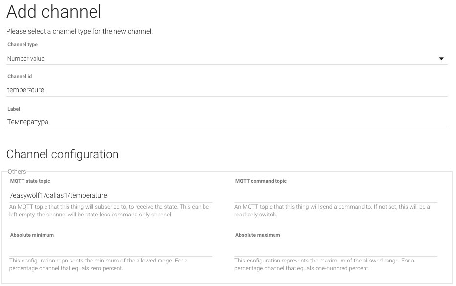
Теперь добавляете канал типа "ON/OFF Switch" со значением "sonoffnode5/gpio/12" в поле "MQTT command topic", а также "1" и "0" в полях "ON" и "OFF".
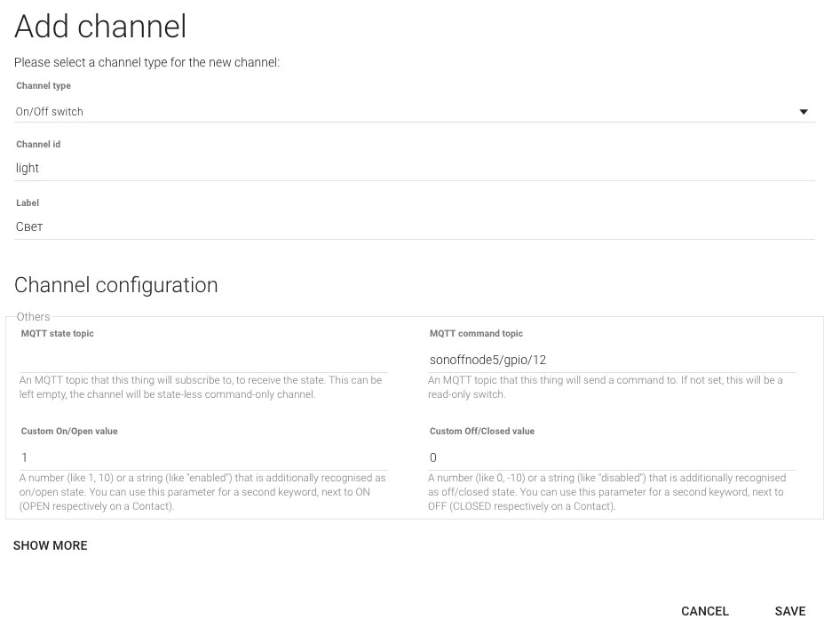
При добавлении каналов вы можете использовать следующие типы.
|
Тип |
Параметры |
Описание |
|
String |
|
Показывает текст, полученный в топике или отправленный в топик |
|
Number |
min, max |
Получает и отправляет данные в виде цифр в определенный топик |
|
Percentage |
min, max, step |
Позволяет передавать/получать значения в процентах, например, для диммеров |
|
Contact |
|
Топик для устройст со статусом Открыто/Закрыто |
|
Switch |
custom on/off |
Позволяет отправлять значения Включить/Выключить в топик устройства |
|
Color RGB/HSB |
custom on/off |
Передает данные о цвете в RGB / HSB формате |
|
DateTime |
|
Канал для передачи данных в формате date/time |
|
Image |
|
Для передачи картинок в формате (bmp,jpg,png) |
|
Location |
|
Позволяет передавать геоданные о местоположении |
Попробуйте добавить в систему пару MQTT каналов, с которыми работают ваши умные устройства.
Что дальше делать с этими каналами?
После того как вы добавили элемент MQTT Thing в openHAB и добавили в него несколько каналов необходимо привязать их к элементам items. Вся последующая работа опенхаба с вашим умным устройством будет происходить по именам этих items.
Если у вас в настройках Configuration->System в блоке Item Linking включена функция Simple_mode, то элементы items будут добавляться автоматически. Если вы добавили новый канал в MQTT Thing, например, mqtt:topic:wolfmother_broker_generic:ESOCKET1, то для него создаcтся элемента item c названием mqtt_topic_wolfmother_broker_generic_ESOCKET1. Этот элемент будет отображаться на главной странице Paper UI.
В нашем случае эта функция была включена, поэтому в Paper UI на главной странице "Control" появится новое устройство с параметрами "Температура" и "Свет". Обратите внимание на то, что значение параметра "Температура" обновится только тогда, когда с датчика придут новые данные. Данные, которые приходили в систему до добавления этого канала, не сохранены. А вот выключатель света должен заработать сразу.
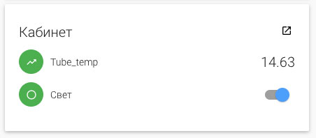
Для более тонкой настройки системы вы можете отключить функцию Simple_mode. В этом случае вам придется добавлять элементы item вручную через текстовый конфигурационный файл. В openHAB 2 все настройки хранятся в специальный папке, например, в линукс системах это /etc/openhab2/. Находите в этой папке папку items и создаете в ней новый файл с расшинерием *.items, например, demo.items. Добавляем в него следующие строчки для элементов с именами Out_temp и ESOCKET1:
Number Out_temp "На улице [%.1f °C]" { channel="mqtt:topic:wolfmother_broker_generic:temperature" }
Switch ESOCKET1 "Wi-fi розетка" { channel="mqtt:topic:wolfmother_broker_generic:ESOCKET1" }
Сохраняем. Эти элементы также должны появиться на главном экране в PaperUI. В отличии от автоматического добавления, во время ручной настройки элементов item мы можем указать дополнительные параметры, например, задать иконку элемента, добавить его в группу устройств, добавить лэйбл с дополнительной информацией, добавить данные для подключения в умному дому Apple и Google. Также, если у вас в системе много элементов, то через файл их править намного быстрее.
Это все что вам нужно сделать, чтобы ваше умное устройство на MQTT появилось в системе openHAB. Теперь вы можете получать данные с датчиков и управлять wi-fi розетками. Что ещё можно сделать с этими данными?
Использование items графических интерфейсах
Элементы items являются одними из основных элементов в openHAB. Вы связали параметры умных устройств с элементами items - Out_temp и ESOCKET1, дальше вся работа будет происходить только с ними. Теперь вас больше не волнует по какому протоколу и как подключено устройство.
В openHAB есть несколько способов отобразить элементы умного дома в графическом виде - отображение с помощью файлов sitemaps (в Classic и Basic UI) или в HABPanel. Отображение через sitemaps позволяет отличается очень быстрой и стабильной работой, эти отображения вы можете использовать в приложении на телефоне для удаленного подключения к системе, также их легко переносить из системы в систему. Из минусов: их надо прописывать в текстовых файлах. Добавление файлов в HABPanel является более простым, все можно сделать прямо в графическом интерфейсе, просто добавляя и перетаскивая элементы.
Добавление с Sitemap
Добавление в HabAdmin
Использование Items в правилах
OpenHAB имеет большой функционал для автоматизации умного дома. Мы можем создавать правила для разных устройств и сценариев. Все что нам для этого необходимо - знать названия айтемой устройств.
Также в правилах можно использовать MQTT Actions в правилах
Как перевести item с MQTT Binding 1.x на 2.x?
Если вы обновите старую систему openHAB до версии 2.4 или новее, то скорее всего у вас перестанут работать все MQTT items, которые были настроены ранее. Чтобы это поправить вам необходимо установить новый MQTT binding, добавить свой MQTT брокер через веб интерфейс, добавить MQTT Thing, добавить в него все каналы, с которыми вы работали раньше. А теперь в старых файлах item просто пропишите работу напрямую с этими каналами. Если раньше вы писали байндинг, канал, команду, то теперь просто прописываем название канала, который был добавлен через PaperUI.
Было:
Number Out_temp "Температура на улице [%.1f °C]" {mqtt="<[mainbroker:/easywolf1/dallas1/temperature:state:default]"}
Стало:
Number Out_temp "Температура на улице [%.1f °C]" { channel="mqtt:topic:wolfmother_broker_generic:temperature" }
В файлах sitemaps и rules никаких изменений делать не надо. Теперь все ваши старые MQTT айтемы снова заработают.
Ручная настройка подключения к брокеру
Если вы не доверяете веб интерфейсу и хотите как и в первой версии MQTT байндинга настраивать подключения к брокерам вручную в конфигурационном файле, то можете это сделать следующим образом. В папку настроек /things/ добавьте файл broker.things, в нем укажите необходимые вам брокеры в следующем виде:
mqtt:broker:mySecureBroker [ host="192.168.0.41", secure=true, certificatepin=true, publickeypin=true ]
mqtt:broker:myUnsecureBroker [ host="192.168.0.42", secure=false ]
mqtt:broker:myAuthentificatedBroker [ host="192.168.0.43",secure=true, username="user", password="password" ]
mqtt:broker:pinToPublicKey [ host="192.168.0.44", secure=true , publickeypin=true, publickey="SHA-256:9a6f30e67ae9723579da2575c35daf7da3b370b04ac0bde031f5e1f5e4617eb8" ]
Тут представлены разные по уровню безопасности подключения к MQTT брокерам.
Также в файлах .things вы можете создавать Generic MQTT Thing устройства и прописывать им каналы для связи с умными устройствами:
Bridge mqtt:broker:myUnsecureBroker [ host="192.168.0.42", secure=false ]
{
Thing mqtt:topic:mything {
Channels:
Type switch : lamp "Kitchen Lamp" [ stateTopic="lamp/enabled", commandTopic="lamp/enabled/set" ]
Type switch : fancylamp "Fancy Lamp" [ stateTopic="fancy/lamp/state", commandTopic="fancy/lamp/command", on="i-am-on", off="i-am-off" ]
Type string : alarmpanel "Alarm system" [ stateTopic="alarm/panel/state", commandTopic="alarm/panel/set", allowedStates="ARMED_HOME,ARMED_AWAY,UNARMED" ]
Type color : lampcolor "Kitchen Lamp color" [ stateTopic="lamp/color", commandTopic="lamp/color/set", rgb=true ]
Type dimmer : blind "Blind" [ stateTopic="blind/state", commandTopic="blind/set", min=0, max=5, step=1 ]
}
}
Итог
Давайте ещё раз рассмотрим как работать с MQTT устройствами через openHAB:
1. Настраиваем MQTT сервер (брокер), к которому будут подключаться все клиенты, включая openHAB;
2. Создаём умное устройство, которое подключается к MQTT серверу и передает данные с датчиков в каналы данных или подписывается на управляющие каналы и ждет команд;
3. В openHAB мы ставим новый MQTT binding, который позволяет опенхабу подключаться к брокеру как клиенту;
4. В openHAB добавляем новое подключение к брокеру;
5. Добавляем новое MQTT Generic устройство, которое использует это подключение;
6. В устройство добавляем MQTT каналы, которые используют наши умные девайсы;
7. Для каждого канала создаем элемент item. Теперь вся работа с умными девайсами в системе происходит через имена этих айтемов;
8. Добалвяем items в графические интерфейсы и используем в правилах!
Мы надеемся, что вам удалось разобраться как работать с MQTT протоколом!